Odoo QC
User Groups
Quality user groups hierarchy from bottom to top is as follows:
- Quality: User
- Quality: Administrator
Other groups involved:
- Administration: Settings
Quality Administrator can configure teams.
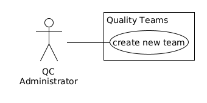Quality Adminstrator configures control points.
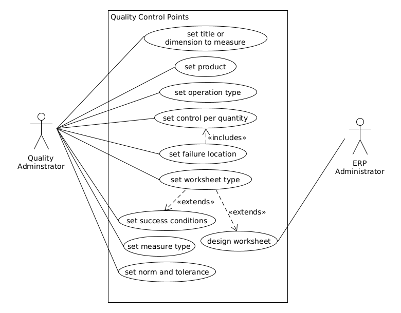Quality user works on quality checks.

Activities
QC on stock transfer will have the following flow.
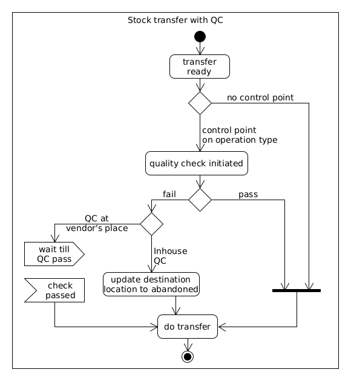Applications
Quality Teams
Quality administrator can configure separate team for third-party QC which can be later configured on quality controls under Quality >> Configuration >> Quality Teams.
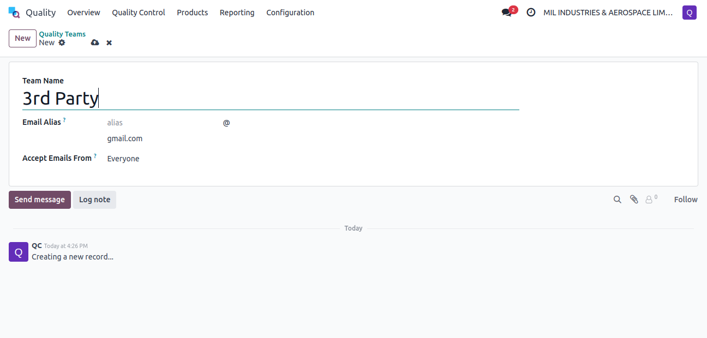Third-party QC incurs some cost. For adding the cost on valuation of raw materials, manage cost using Landed costs. Customer can be reinvoiced through Expense app.
Quality user registers expense using re-invoicing service product.
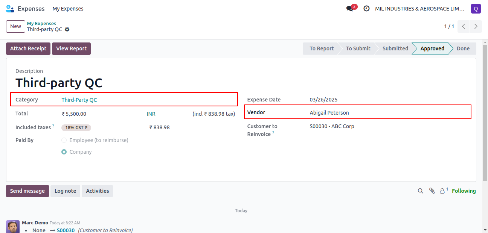On report, quality user sets manager who will approve this expense.
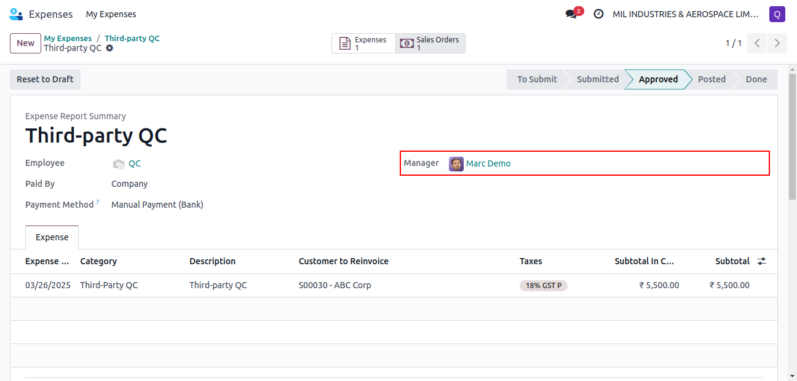Sales user being also expense all approver user can set related sales order to re-invoice and approve the expense.
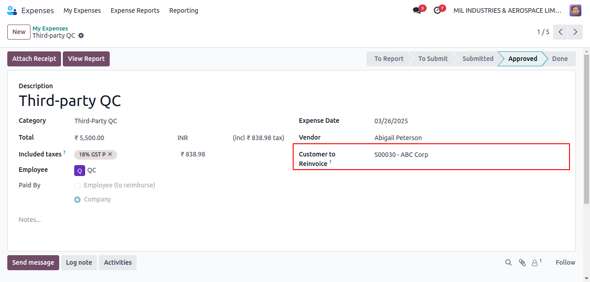Sales user in accounting invoicing group can post expense report using Post Journal Entries button. This will also create a new order line in related sales order.
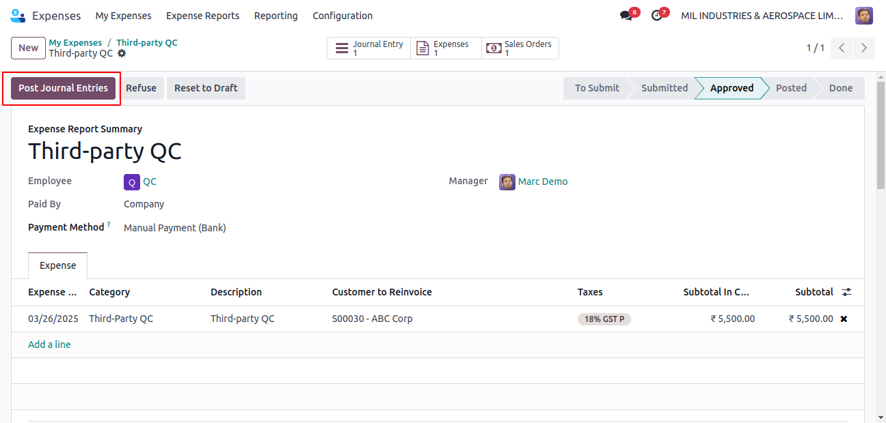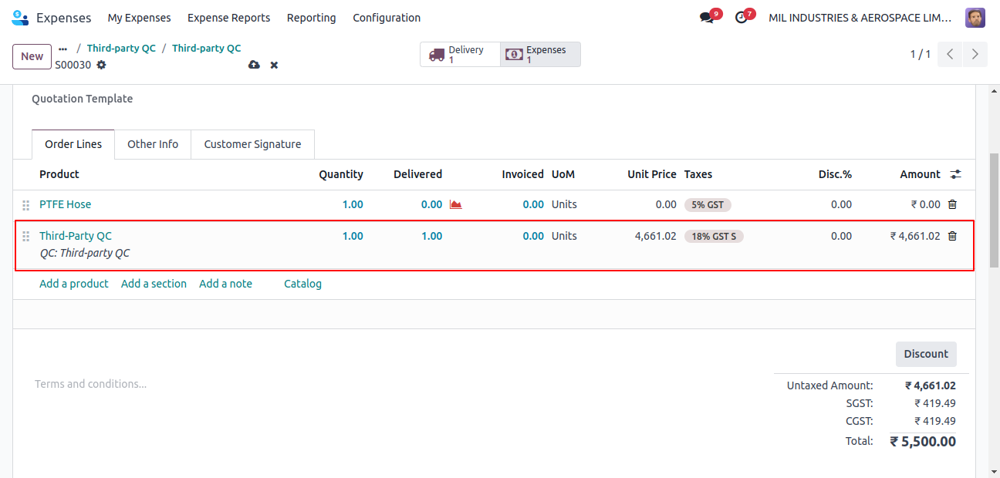
Control Points
Quality administrator can configure control points under Quality >> Quality Control >> Control Points.
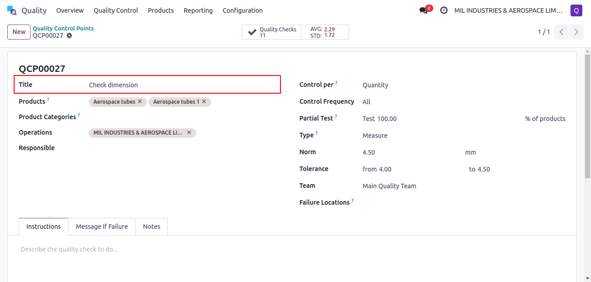Same quality control can be configured for multiple products.
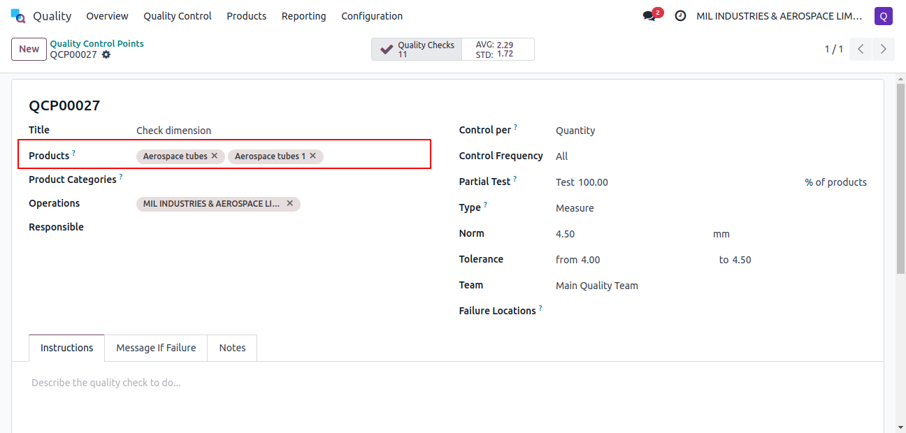Operation type should be selected based on QC, either at supplier's place or in-house.
| QC Place | Operation Type | Transfer Source | Transfer Destination |
|---|---|---|---|
| Supplier | Receipts | Partners/Vendors | MIL/Input |
| In-house | Storage | MIL/Quality Control | MIL/Stock |
Select Quantity in Control per field. Also configure locations on which products failing QC should go.
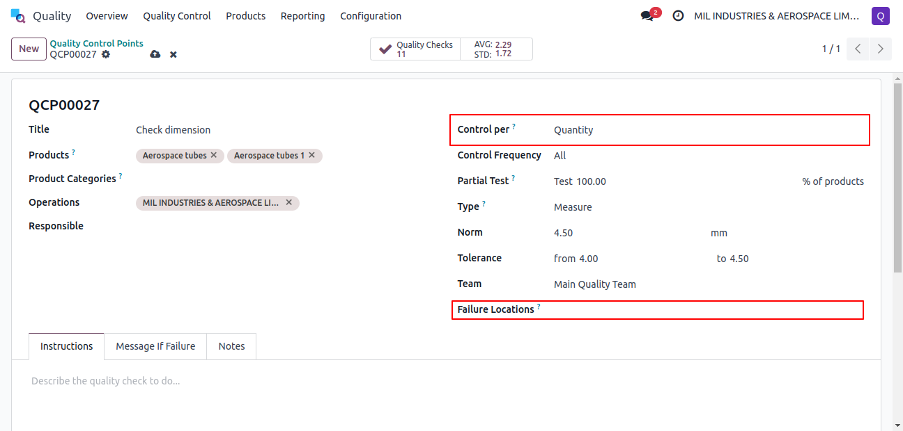Other Control per options available are:
- Operation
- Product
If field Type is set to Worksheet, then configure success conditions.
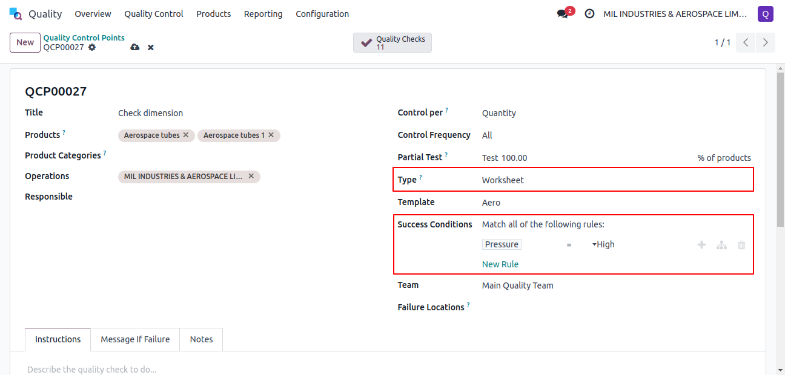ERP administrator can configure worksheet with Odoo Studio under Quality >> Configuration >> Quality Worksheet Templates.
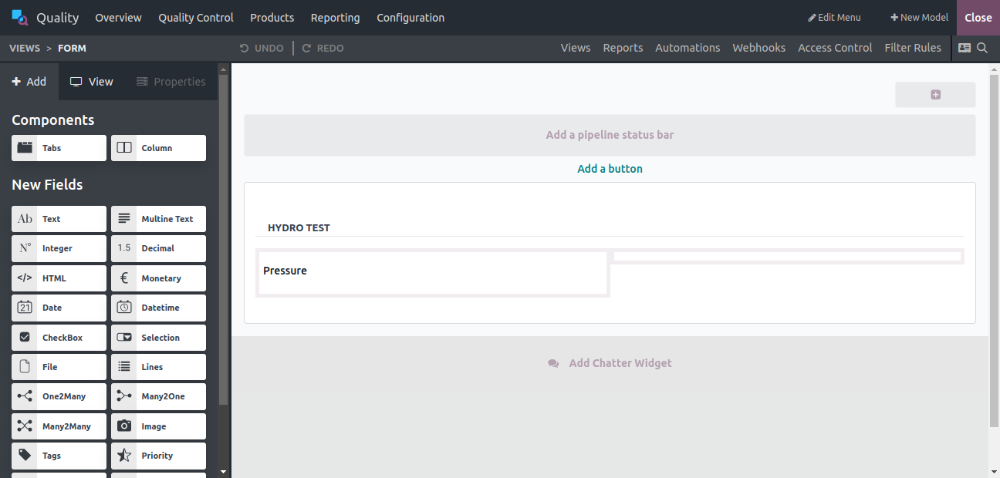If field Type is set to Measure, configure norm and tolerance.
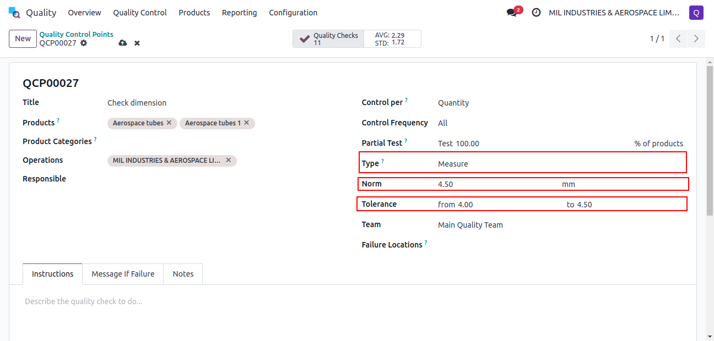Quality Checks
Quality user can access quality checks under Quality >> Quality Control >> Quality Checks. The quality check with test type measure has Measure field visible, and quality check with test type worksheet has worksheet fill smart button visible.
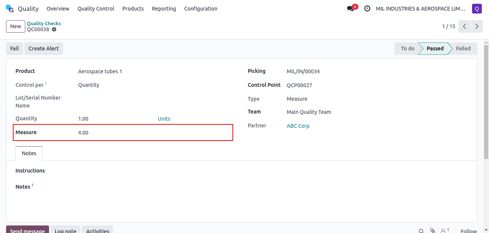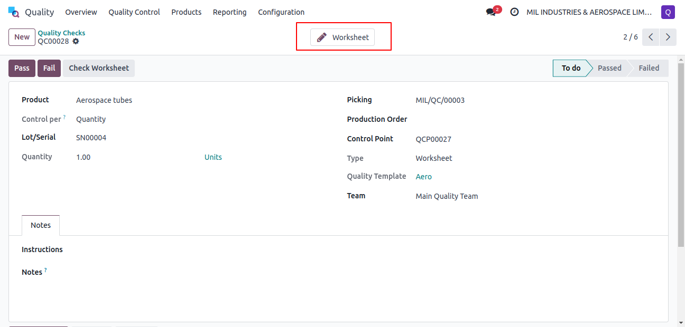
Certificates and other documents can be added on quality check records using paperclip icon.
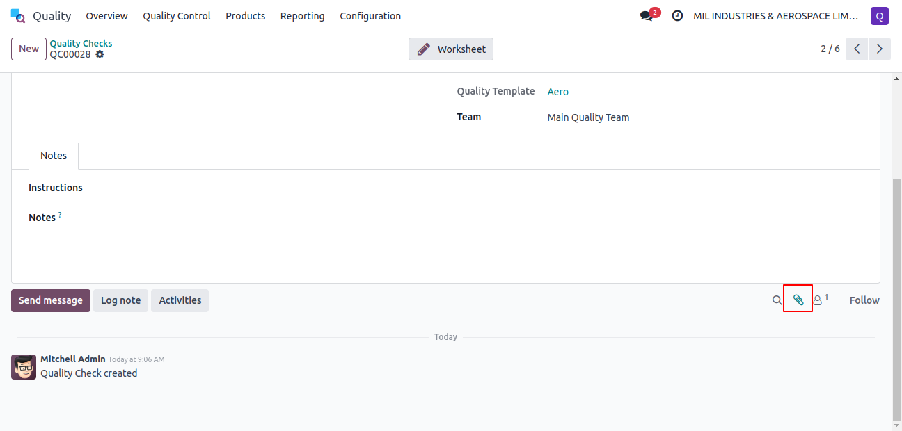Gauge Calibration
ERP user can raise calibration request under Maintenance >> Maintenance >> Maintenance Requests.
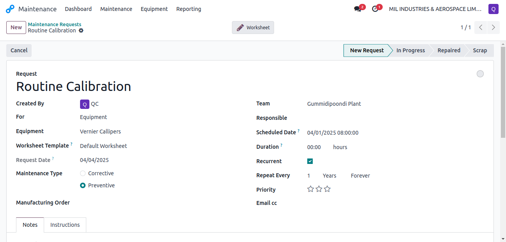